Iregular Corrugated Waveguide Filter Design
Open this article in separate window to print
In modern microwave communication technologies, there is great interest in waveguide low pass filters. To be noticed, there are currently many conceptual solutions for a waveguide LPF. These include conventional corrugated waveguide filters, ridged waveguide evanescent-mode filters, waffle iron filters and, finally, the so-called "inhomogeneous stepped-impedance corrugated waveguide low-pass filters" [1]. The last ones, by the way, became popular among waveguide filter designers, which is reflected in many recent publications. Nevertheless, in spite of so many theoretical view points on these filters, from a practical point of view, it is not very clear how to design them. In view of this interest, we present here simple design tools [A1, A2] that can be used to design a filter of this kind and detailed guidelines based on a simple "hit-and-miss" approach. As an example of the application of these tools and instructions, we will design a C-band interference reject waveguide filter.
For example, we need a waveguide low-pass filter to an existing C-band receiver. This receiver has always worked well before a "super-duper" 9G cellular base station was installed somewhere nearby. This 9G immediately littered everything around with spurious interference in the range from 14 to 32 GHz. As we found, the original LPF is intended to clean interference only up to 12 GHz. In other words, we need an additional LPF that we could put in cascade with the existing one. So we would like to have a simple, reliable and inexpensive WR-229 low-pass filter with a bandwidth from 3.7 to 4.2 GHz and a stopband extending from 14 to 32 GHz. But there are no such filters on sale anywhere around. So we are going to design it here from scratch.
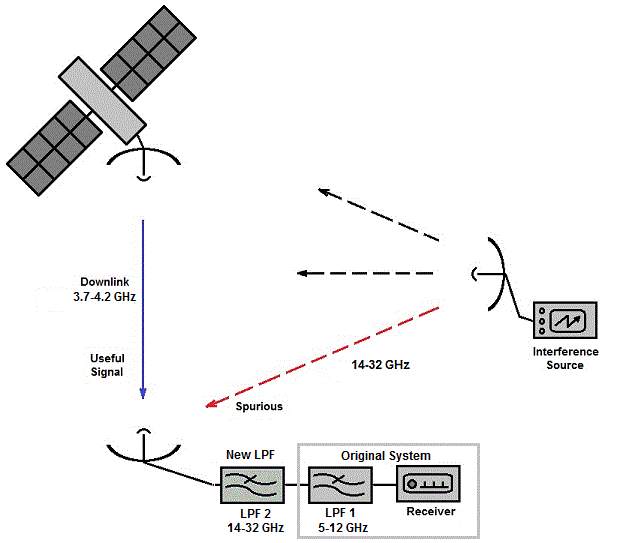
Figure 1: Schematic representation of satellite C-band downlink reception affected by unwanted interference
In terms of design goals, we would need a waveguide low-pass filter with sufficiently good characteristics, such that it would not impair the quality of the receiving signal to any noticeable degree. Let us target the following parameters:
Table 1: A specification with list of important parameters and their targetted values.
| Parameter | Value | Notes |
| Pass-Band,GHz | 3.7 - 4.2 | Reception signals frequency range |
| Insertion Loss, dB | < 0.1 | It is a C-band waveguide LPF, we expect it to be low. |
| Return Loss, dB | > 23 | This filter is to be connected to an existing LPF, so we don't want the total return loss to degrade much |
| Stop-Band, GHz | 14 - 32 | Unwanted interference signals |
|
Rejection,
dB 14 - 20 GHz 20 - 32 GHz |
> 20 > 40 |
The attenuation needed to remove the interference |
| Length, inch | < 12.0 | We have no more space for the filter |
As noted, there are already many different concepts for low pass filters (LPF),
but they can all be different and not all will be suitable for solving our problem.
In order to define the best (for us) concept, let us see what is special about
our way of application.
Here we can see the following:
Here we can say that of those well-known waveguide LPF designs that were mentioned above, only the waffle iron and "inhomogeneous" corrugated ones are claimed to be "spurious-less". The waffle iron filter design are often considered [A3] to be very complex in terms of handling the spurious modes that can cause unwanted responses in both the passband and stopband. The concept of the inhomogeneous filter [1] looks theoretically simpler and more modern (both visually and technologically). It seems to be what we need in terms of filtering. In addition, we have a proper design tool such as WR-Connect [A2].
As stated in the help article in "Corrugated Waveguide Low-Pass Filter" page, there have been published many papers on these types of filters and our way of designing is somewhat different. Therefore, it makes sense to explain the basics of structural concept and design approach used here. The filter is represented as a section of corrugated (mainly in E-plane) waveguide with basic dimensions and period of corrugations smoothly changing along longitudinal direction (see Figure 2 below).
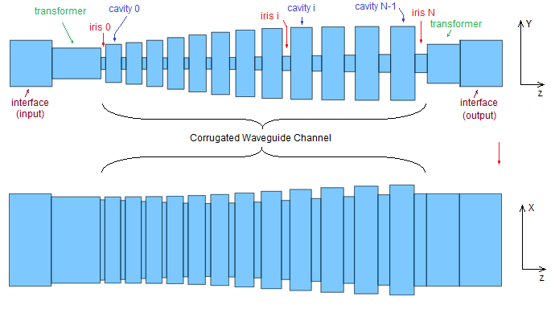
Figure 2: Schematic and structural representation of a conventional irregular corrugated filter.
This part of corrugated filter is called "channel" here and it is considered to be fundamental part in forming the filter's stopband. In most known cases, the channel is tapered from ends to center, from center to ends or from one end to the other end. The primary design tool presented here can be used in all these cases of profile shaping. Here the channel shaping profile is set by the dimensions of corrugations at three points (start, middle and end). These three points, in turn, are defined by the width, height and length of the smaller and larger waveguide nodes, which form the composite element of the corrugated structure period. Further, between these points, the profile of the waveguide channel along its inner and outer generatrix of the corrugations is set by the following distribution function (1).
|
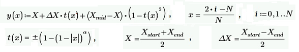 , |
(1) |
where this function is applied to each iris dimensions (wi,hi,li, i=0,1,..N) and each cavity dimensions (Wi,Hi,Li, i=0,1,..N-1). It should be noted here that the number of irises, therefore, N-1 is accordingly counted for irises in (1). In work [2], an EM model of such a corrugation element (cavity junction) is considered, which exhibits a transmission zero under certain conditions. In these terms, a single corrugation can be already considered as an elementary band-rejection filter. There it is also proposed to distribute the dimensions of the corrugation in such a way that their elementary stopbands cover the entire targetted stopband. In simple terms, this parameter a (alpha) adjusts the balance between large corrugations that operate at low frequencies and small corrugations that operate at high frequencies. It is widely known that for regular corrugated filters the transmission versus frequency response of the dominant TE10 mode directly affects the transmission responses of the TEN0-modes [2], which are, in fact, its distorted images. In case of irregular corrugated (when a-dimension of channel is not constant) filter [1], however, there is no a simple design rule except just changing the channel width from narrow to wide, from ends to center or from one end to the other end, or vice versa. However, in both cases (regular and irregular), the high-order TEN0-modes responses are somehow related to the original TE10-mode response. Therefore, it is very important to design the filter in such a way that the TE10 stopband to be as wide as possible and continuously free from spurious responses. Therefore, initially, the filter channel must be configured in such a way as to obtain a good quality TE10 stopband. Further, this waveguide channel is to be matched to the I/O interface by means of a transformer (if needed). If using this design tool, this step is automatically performed. Nevertheless, since matching occurs at a single frequency point (center frequency), the resulting well matched bandwidth may not be enough to cover the entire passband as targetted and additional optimization would be required.
So we have chosen a filter concept that seems to suit us in terms of technological implementation and design method. We also have design and analysis tools for this type of structure. Now we need to decide, in fact, how we will do it step by step. To do this, we need to know some basics on how such a filter is built and how it operates. Therefore, before embarking on the design, a beginner designer is highly recommended to familiarize with the original knowledge source in [1]. Notwithstanding, very briefly, how such a filter works can be explained in a few sentences:
As we can see, the instructions above look simple except for the last two steps. Therefore, for the sake of clarity, we will describe in detail each step using our filter as an example. Following our instructions written above, we open the "Corrugated Waveguide Low-Pass Filter" page, select WR-229 waveguide interface, click "Set Initial" button and then click "Set Project" button. The first click leads to setting the default value for center frequency, I/O interface and internal corrugated waveguide channel with dimensions of all corrugations. These initial data and dimensions are just a guess, so they can be changed by directly entering alternative numbers into the appropriate fields. The "Set Project" button also sets the project setup data (frequency plans, prototypes, units, etc.) as a "good" guess for just only in order to facilitate the user to directly enter data in the Project Setup Page. It is advisable to do this only once and then make the necessary adjustments on that page. So, this simple sequence of actions is shown in the picture below.
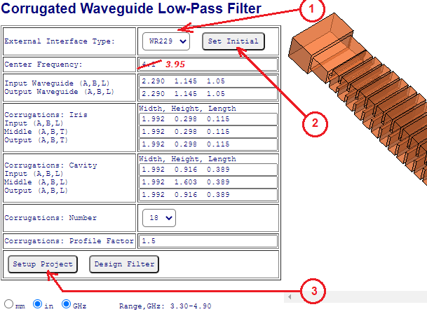
Figure 3: Steps to set the default design concept and project data.
The initial settings are fine with us as a starting point except maybe the center frequency, which we set as the midpoint of our specified passband (fc =(3.7+4.2)/2 = 3.95). Now we just click "Design Filter" button (Figure 3) and see what we are getting. After we click the button, we will be navigated to the "design editor" (designer) page (see Figure 4). This page is the main entry point to most of the other functional pages of WR-Connect CAD environment. There are three main control areas we are going to use now:
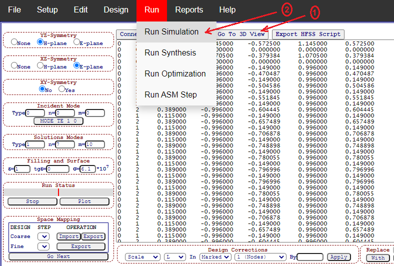
Figure 4: Next steps to see 3D view and run simulation.
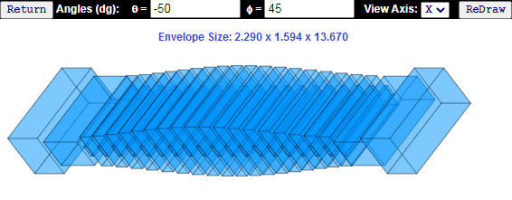
Figure 5: 3D view plot.
As noted in the above paragraphs, here we are using simple trial and error, while not really thinking about what we are doing. The main purpose of this tutorial is to learn how to use our toolkit and acquire the basic skills to design a corrugated waveguide low-pass filter. Therefore, we will run simulations a lot and chaotically, review the obtained results and, according to the results, make certain adjustments to the design model. Thus, we will start with the original model and launch simulation from the menu (see Figure 4), wait until the red status bar (located in left panel with controls) runs to the end, and then review our results (click "Plot" button under status bar). The first simulation result will look like shown on Figure 6 below. As a result, we have already got quite good return loss, which is at least 16 dB in our entire band. In some cases, we could even say that this is already enough, slightly optimize the return loss to say 20 dB, stop simulations, fabricate, and send it to operation. But let us not rush and see how our filter actually works as a low-pass filter, namely how it cuts off the specified spurious in far frequency ranges.
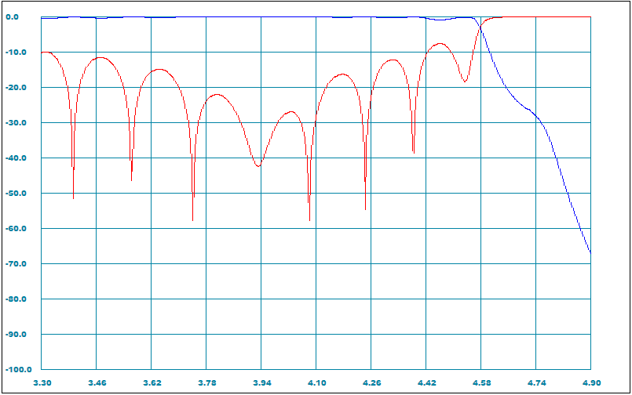
Figure 6: The default design reflection and transmission magnitudes (dB) versus frequency (GHz) responses.
It should be noted that the simulation frequency bandwidth only covers the near-band frequencies, which fit WR-229 operational bandwidth only. This comes with the default settings. In order to expand the simulation frequency range, we have to go to the "Setup Page" and fix it there as shown on see Figure 7.
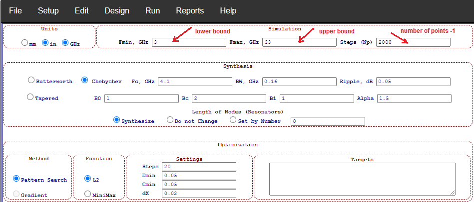
Figure 7: The frequency sweep is reset from 3 to 33 GHz with 2000 intervals (2001 points).
After correcting the frequency range, we will return to the Desig Editor (click the "Design"on top black bar), where we will again run simulation and review results in same manner (see Figure 8 with resulting performance plots).
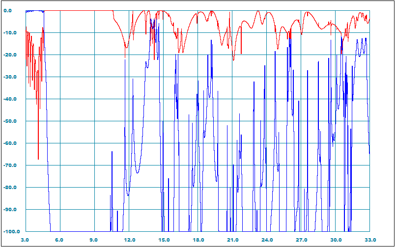
Figure 8: The reflection and transmission magnitudes (dB) over extended frequency sweep.
Those These are the basic steps for quickly running simulations.
From the plot on Figure 8, it is visible that the dominant waveguide mode (TE10), pass-band only extends roughly from 5 to 11.5 GHz, although we need much wider stopband. As it is already noted, in addition to the TE 10mode, 121 other waveguide modes exist and possibly propagate in a WR-229 size waveguide at high frequency bound. Since it is a failure design, keeping simulating all of possible waveguide modes makes no sense at all. Nevertheless, out of curiosity, it still makes sense to run the first two low order spurious modes having different polarizations (TE20 and TE01). The basic principle on how the incident and solution modes are set and indexed is explained in the Design Editor help page.
| Mode | YZ-Symmetry | XZ-Symmetry | Incident Mode | Solution Modes | Go to This Design Step |
| TE20 | E | E | 0 1 0 | 1 7 10 | |
| TE01 | E | H | 0 0 0 | 1 7 10 |
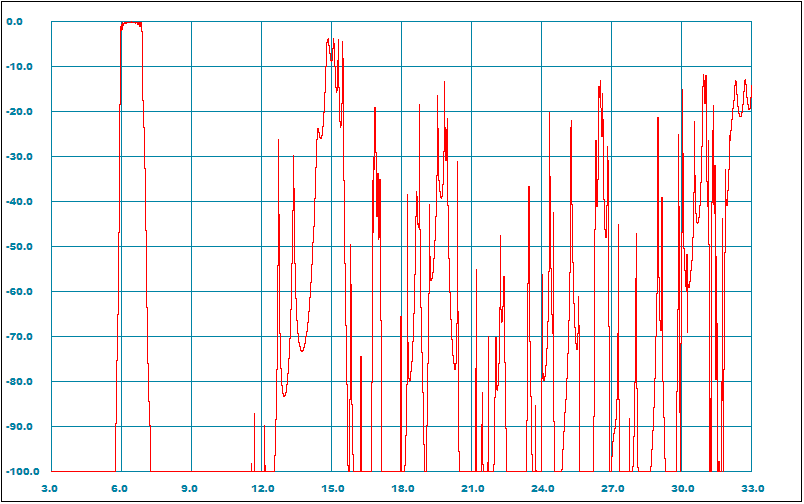
Figure 8: The TE20-mode transmission magnitude (dB) over extended frequency sweep.
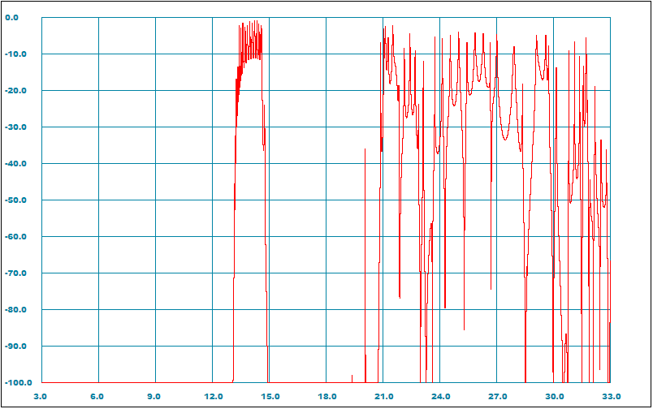
Figure 9: The TE01-mode transmission magnitude (dB) over extended frequency sweep.
The conclusion we can make is that our "draft" filter does not work for these waveguide
modes either. And it would be very unlikely if it worked in other waveguide modes as well.
According to the generally accepted design rules for such filters
(we have also written the instructions above), we need to narrow the waveguide channel
to such a size that it would not propagate waveguide modes with horizontal E-field component.
In other words, we need to make it so narrow that would push the spurious responses of those modes
(similar to the one in the Figure 9) out of our targetted stopband (above 32 GHz).
Thus, if we do so, only the TEN0 type waveguide modes would remain.
So, following the instructions in the previous paragraphs (7.1 to 7.5), we just learned how to use the basic functions of the interface. First, we almost designed a waveguide filter based on an E-plane corrugated structure. Secondly, we ran several simulations and got interesting graphs with characteristics. But, unfortunately, we have not completed our task. The filter designed by us, although at the very least passes our useful signals (3.7 - 4.2 GHz) through, it does not stops the transmission of the spurious interference (14.0 - 32.0 GHz) at all.
Let us see what the internal structure of our filter looks like in the corrugated plane. To do this, we go to the 3D view option and set it the angles as 90 and 90. Now we can visually suggest that our filter clearly lacks small corrugations (Figure 10), which are supposed to work at high frequencies [3].
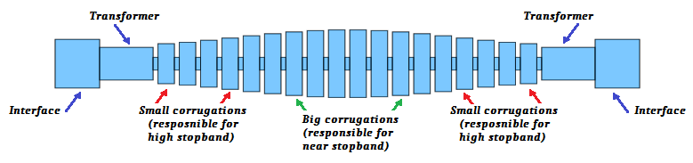
Figure 10: Corrugated filter profile corresponding to the default settings.
Let us then take a brief look at the TE10 characteristics (Figure 8) showing the end of stopband starting from somewhere around 12 GHz. But we need it to extend at least three times longer. This can give us an idea to reduce each dimension of the small corrugations about three times. Let us try. To do so, we need to return back to the "Corrugated Filter designer" page (see section 7.1) and fix the filter's ends there. The suggested changes are shown on Figure 11 below. Here the changes have been made to two groups of structure dimensions corresponding to irises and cavities at the ends of the corrugated channel. In addition, the "profile factor" has also been changed and set to 3. Such a twofold increase in this parameter would increase the relative number of small corrugations in respect to big ones.
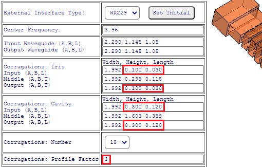
Figure 11: Recommended settings for the filter channel profile. The marked red parameters are reduced about three times relatively to the default settings (section 7.1).
Now, if we click the button "Design Filter" and further take a look to the profile of updated filter profile, it will look like as shown on Figure 12 below.
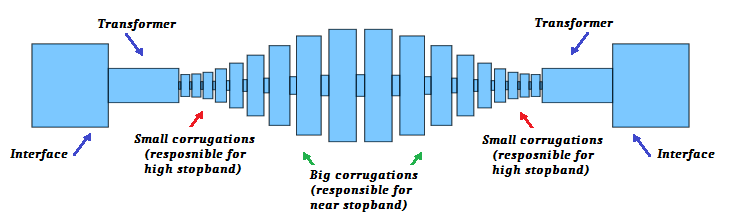
Figure 12: Updated profile of corrugated waveguide channel with fine corrugations at the ends.
If we now run the simulation in the fundamental TE10-mode, we get the following characteristics of the forward and return losses over a wide frequency sweep.
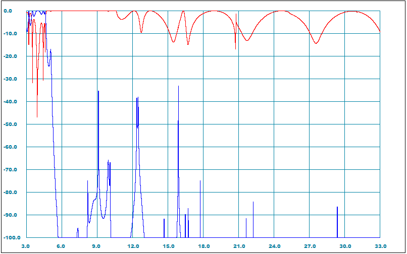
Figure 13: Broadband reflection and transmission magnitudes (dB) versus frequency (GHz) characteristics corresponding to the non-optimized corrugated filter with fine corrugations (see Figures 11 and 12).
Same s-parameters data is also plotted over the nearbands on Figure 14.
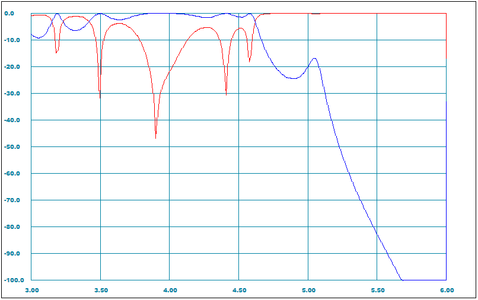
Figure 13: Nearband reflection and transmission magnitudes (dB) versus frequency (GHz) characteristics corresponding to the non-optimized corrugated filter with fine corrugations (see Figures 11 and 12).
Now we can discuss the new results. A good news is we have obtained an almost good rejection of the high stopband except of a minor thin spurious spike (we just ignore it for now). But the bad news is the nearband appearance. In addition to this nuisance, our expectations for a good rejection of the higher order waveguide modes are also low. We can, of course, run TEN0 simulations and see the rejection characteristics (as we did it before), but this will only be a waste of time. This is because the filter channel is still homogeneous in H-plane, but it must be inhomogeneous [1].
It is very easy to introduce a certain longitudinal inhomogeneity of the channel width in the Designer page fields. Let us widen the channel at one end (we make it 2.5''), leave the other end's width same (1.992''), and roughly their average in the middle (2.2'').
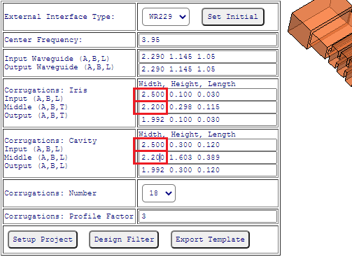
Figure 14: Making the filter channel width smoothly taped from one end to the other end.
Now, if we click the "Design" button, we will be taken to the "Designer" page, from where we can start the simulation as we did before. Then we get the characteristics of reflection and transmission of the fundamental mode over a wide frequency sweep (see Figure 15 left). Here we can see that the new broadwall-inhomogeneous profile has not considerably changed the appearance of the broadband response, although it has made the passband and roll-off narrower (now it is too narrow for wideband matching) as shown on Figure 15 right.
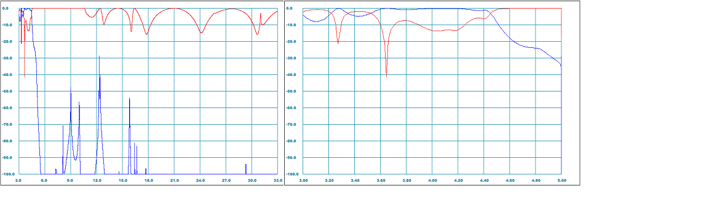
Figure 15: Reflection and transmission (dB) versus frequency (GHz) plots characteristics of broadwall-inhomogeneous tapered corrugated filter with new profile settings (Figure 14).
We can easily fix this if we go back and decrease the height of the middle corrugations (say by 0.1'' correcting the number 1.603 in Figure 14 to 1.503) and do the same.
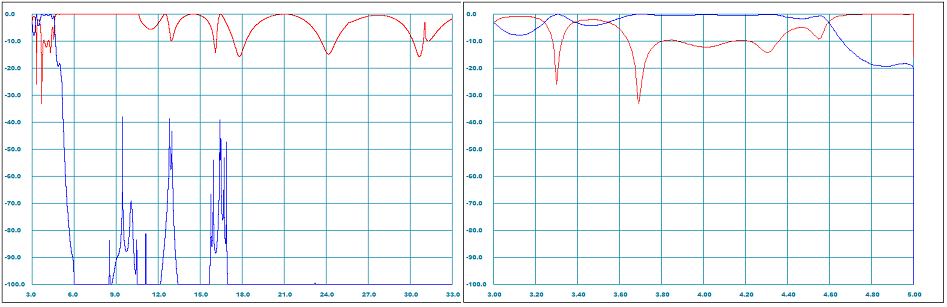
Figure 16: Reflection and transmission (dB) versus frequency (GHz) plots characteristics of the updated broadwall-inhomogeneous tapered corrugated filter with middle cavities heght reduced by 0.1''.
According to a usual logic, now we should run the higher order modes in order to see their transmission over the range from 14 to 32 GHz, but we will try to improve the quality of the pass-band (the return loss is too low) instead. The main reason we have such a low return loss is that the corrugated channel of our filter is very narrow in height at the ends in comparison with the input/output interface waveguide. Using a common but inappropriate (for waveguides) formulation from RF engineering books, we could say that the end channel impedances are too low in comparison with the standard waveguide impedance.
In such cases, multi-step quarter-wave transformers are commonly used. Therefore, according to the history of corrugated waveguide filters [A5] the first ones utilized several transforming steps (see Figure 1 in [A1]). However, the experienced designers do not really like transformers as they add a lot in size and weight [2] and they try to replace the transforming steps with smooth transitions of the corrugatios from the ends to the center (see Figure 2 in [A5]). Practically, however, it is complex and does not always work in terms of better rejection performance. As beginners we are not going to challenge this way this time. In fact we are not launching our filter into the space where size and mass become very critical. On the contrary, we have plenty of room to lengthen our design with additional transformer step and thus make our design process easier. Technically, in terms of WR-Connect tools, it is very easy to do in the Design Editor page. There we can simply select, copy and paste an additional step (each transformer step is represented by step junction {0-index} and waveguide node {1-index}) at each end. Next, we empirically adjust the height of the steps by making the outer ones 0.1'' higher and the inner ones 0.1'' narrower (we do this at the both ends and in those positions as shown on Figure 17).
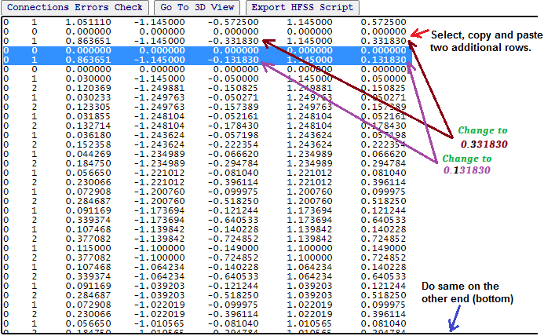
Figure 17: Making an additional transforming step between the input waveguide node (first row) and the first corrugation. The same has to be done on the other end of the filter.
If we look to the 3D view (click "Go To 3D View" button ) again, we will see the additional steps added between the corrugations and the end (interface) waveguides (Figure 18).
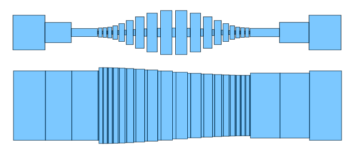
Figure 18: Side and top views of the filter structure updated with additional transformer steps.
We can run the simulations again in a same manner as we did it before over the entire bandwidth (Figure 19 left) and zoom it in over the near-band (Figure 19 right) to see the pass-band ripples and roll-off.
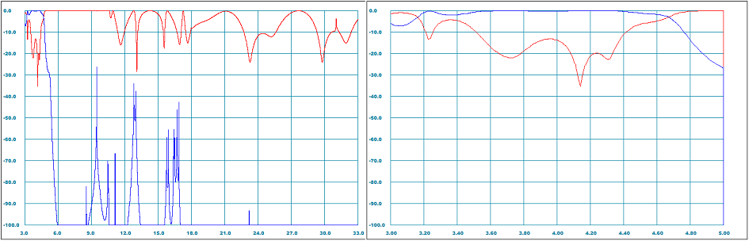
Figure 19: Broadband (left) and near-band (right) plots of TE10-mode reflection and transmission magnitudes (dB) versus frequency (GHz).
Here we can notice that even such a rough way of putting additional transforming steps at the ends of the filter have significantly increased the return loss making it a good starting point to apply optimization techniques. When some RF filter gurus are asked how they design such good filters, they answer "I just got some dimensions and optimized". Their colleagues or managers would think "this guy is either snobish, selfish or just not a team worker" because "just optimization" cannot be a certain design procedure transferable to others. However, according to the modern state of RF engineering and cumputer technology, optimization methods can be used as a base design guideline without preliminary filter synthesis methods applied [3]. On the contrary, according to [3], the direct use of optimization methods allows efficient designing of more complex and composite filter structures that finally demonstrate better RF performance in respect to specific practical requirements. Therefore, the ability to apply optimization methods to RF engineering problems is a very demanded skill, which we are going to learn here as well. In general, apparently, there are no general rules on how to use optimization in relation to filter structures. Much depends on the type of optimizer (for example, gradient, pattern search), optimization function (L2, minimax, etc.), initial performance, and so on. This often comes with experience. Therefore, to begin with, we will proceed from simple (but perhaps not the most effective rules). Let us try. First of all, we return to the plot (see Figure 20) over a narrower bandwidth showing the reflection ripples and the roll-off.
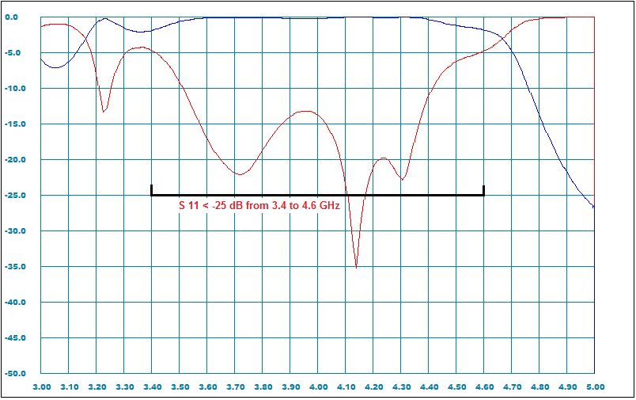
Figure 18: Optimization parameters and targets marked on near-band response plot. transmission magnitudes (dB) versus frequency (GHz).
We will only limit ourselves to optimizing the input return loss (S11) in a wider bandwidth including our specified pass-band (3.7 - 4.2 GHz) with some extra margins (so we target 3.4 - 4.6 GHz). We also target a good return loss, say 25 dB (we might not be able to achieve it but nothing is wrong in trying). Here we also need to enter the number of frequency points in this range, which should be at least five points per a ripple (30 is more than enough). We need to enter all those parameters in appropriate filelds on the Setup page.
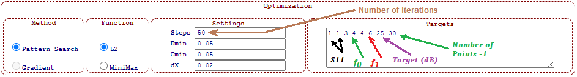
Figure 21: Optimization targets entered in "Optimization" field of Setup Page.
Another important trick is a selection of right "optimizable" dimensions, which are efficiently tuning the targeted pass-band during optimization process while not degrading the far stop-band performance. Based on these considerations, we will optimize the steps of the transformer sections both in length and in height. We will, however, avoid touching the small corrugations responsible for high frequencies except the first and last ones, which are found being efficient for interface matching. The rest, the larger "low-frequency" elements of the structure (such as the transforming sections and large corrugations) will be marked for optimization (see Figure 22).
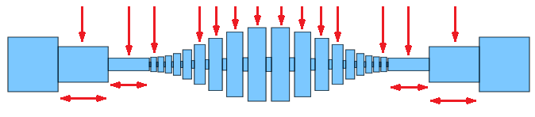
Figure 22: Vertical and horizontal dimensions of transformer sections and cavities selected to be tuned during optimization.
For simplicity, we will also limit ourselves to only the vertical dimensions of these elements, which correspond to the third or fifth decimal value in each row in the topology list (text window on the Design Editor page). Since our filter is vertically symmetrical (Y0 = -Y1), we just can select either the bottom (Y0 variable #3) or the top (Y1 variable #5) position of each element.
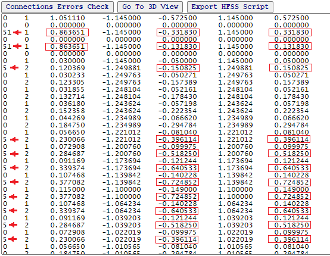
Figure 23: Setting the "optimizable" dimensions. The first integer in each row indicates the serial number of the dimension (among decimal numbers) to be tuned during optimization. If this number is zero no dimensions change. If the number is two-digit, then two dimensions will be tuned (corresponding to each digit) simultaneously. If the structure is symmetrical (as we have), then the corresponding mirror dimensions will also be synchronized. Given vertical symmetry, the optimizer will adjust size # 5 (Y1) and its mirrored size #3 (Y0 = -Y1) at the same time.
After we have done with setting the optimization parameters (Figure 22) and the dimensions to be optimized (Figure 23), we can start the optimization process from the "Run" menu (see Figure 4) and wait a little until the status bar stops and the Design Editor window updates.
Then we run the simulation with the "Run Simulation" button as we have done it many times before and see the plot (Figure 24). This plot can be further rescaled to review in-band performance (Figure 25).
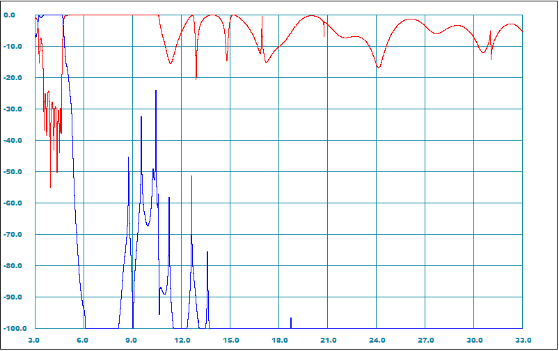
Figure 24: Reflection and transmission (dB) versus frequency (GHz) plots characteristics of the optimized filter.
Now it is much better! However, this is just a response from the main mod, but we have them over hundred in the WR-229 waveguide at 32 GHz. But not all of these modes, however, can squeeze into the vertically narrow corrugated channel.
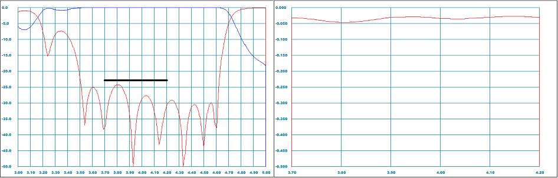
Figure 25: Near-band frequency response (left) and in-band insertion (right) loss plots.
We start with the horizontally polarized TE01 mode. Here the logic is simple, if this mode attenuates, then all other TEnm and TMnmwith indices m>1 do not transmit either. TE01-mode simulation shows more than 100 dB rejection over the whole frequency sweep. Therefore, we can limit our modal transmission analysis to just TEN0 -modes and plot the first nine (see Figure 26).
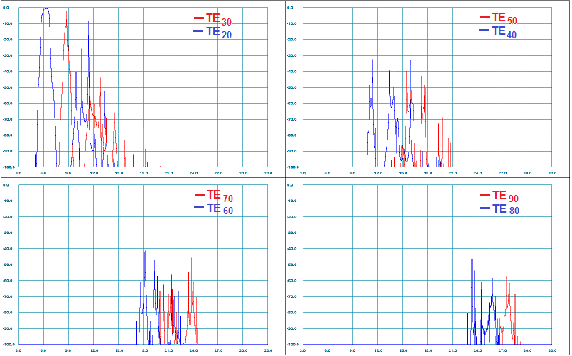
Figure 26: Transmission magnitudes (dB) versus frequency (GHz) plots for first several TEN0-modes (N=2,3,..9).
A quick look at all the characteristics shows that we have completed our task. Let us now finally compare our achievements with our goals in an old fashioned way using a table (see Table 2).
Table 2: Expected (simulated) performance versus specification table
| Parameter | Target | Simulation | Notes |
| Pass-Band,GHz | 3.7 - 4.2 | 3.7 - 4.2 | Reception signals frequency range |
| Insertion Loss, dB | < 0.1 | < 0.07 | We need to add some practical factors |
| Return Loss, dB | > 23 | > 24 | By simulation |
| Stop-Band, GHz | 14 - 32 | 14 - 32 | |
|
Rejection,
dB 14 - 20 GHz 20 - 32 GHz |
> 20 > 40 |
> 40 > 60 |
See the discussion below |
| Length, inch | < 12.0 | 11.0 | Good enough |
Usually, the preliminary performance summary is the result of a successful design concept and contains both the worst and the nominal parameters of real hardware.
Considering many factors that are beyond simulations (software accuracy, fabrication tolerances, measurement accuracy, materials specificity, environmental factors, and so on), the practical expectation is usually quite different from simulation. Therefore, experienced engineers very conservatively bias the simulation data towards worse expectations by adding some degradation factors (margins). In assessing these factors, they commonly rely on both sensitivity analysis and personal experience (even intuition). Since our tutorial is only aimed at learning how to design waveguide filters using WR-Connect tool (we do not plan to actually make this filter and put it on duty), we will limit ourselves here only to the results of our simulations, and also take into account some expected practical factors based on common sense only.
We can imagine that our filter will be made of aluminum in two parts (this is how such filters are usually made), which will then be coated with silver and fastened to each other with screws. Each of these parts will be milled to an accuracy of 0.001''. Here, a simple analysis may show that 0.001'' tolerance will very slightly degrade our performance, but the milling cutter radius (can be greater than 0.1'') can significantly impact our performance in the near-bands (see Figure 25). On the other hand, we could use more precise machining technologies (for example EDM). But the more accurate is the technology, the more more expensive it is. We, therefore, will not get into this discussion in our tutorial.
The same applies to WR-Connect also. We also do not know and we have not investigated how accurate our design process is. It should be noted here that all existing solvers of Maxwell's equations on arbitrary boundaries are imprecise. Therefore, when using certain design tools, responsible engineers proceed from the results of correlations between simulations and practical achievements. At the same time, from experience, they can know which correction factors need to be applied. But we have not done all this and we do not have such an experience. Therefore, for the purposes of our mission, we will assume that our design and manufacturing tools are accurate enough.
Further, regarding the higher order waveguide modes, there is generally a lot of incomprehensible things. First, how do we detect them? How do we measure them? What does rejection mean in this case? What are the acceptance criteria? Most of industrial electrical engineers deal with the dominant TE10-mode only. They cannot actually answer those questions. The usual VNA based setups also cannot measure those modes due to imposibility of calibration and spurious interference between DUT and setup components. Therefore, in the ordinary world of microwave engineering, people try to avoid these discussions and rely on subjective methods of interpreting both modal simulation results and test results. In the world of simulations, the researchers usually operate with multi-modal GSM (generalized scattering matrix) data. When judging the rejection of a filter they usually review only the diagonal matrix elements corresponding to transmission paths. And in the measurement world, the test experts measure only the fundamental mode transmission using smooth waveguide transitions. Nevertheless, even for the dominant mode transmission, the both approaches do not reflect the reality and do not well correlate with each other. In many cases, however, if the filter designer demonstrates a good correlation between simulated results for the dominant mode transmission and measured with tapers, then the results of high mode simulations are usually believed to be true as well (they cannot be measured anyway). We do not have such correlations either. Therefore, we will proceed from considerations of rationality. Namely, we will assume that we can accurately measure the fundamental mode transmission and our simulation is also accurate. Regarding the "exotic" modes (TEN0, N=2,3...), we believe that they will be present in smaller quantities (the higher the order of the mode, the less its presence). Then we can say that our simulation of these modes is too conservative (it is based on 100% power converted into the mode) and therefore we will add 15-20 dB to our simulation results (which is practically reasonable).
The goal of this tutorial is to acquire the basic skills of designing waveguide low-pass filters, learn the theory basics of building them on E-pane corrugated structures, and master some tricks that help us quickly and efficiently cope with this task using the design tools we have. Here we have mastered a simple design method based on creating certain corrugated structure profile with subsequent optimization. So, firstly, we have mastered how we can build a conventional (homogeneous) tapered corrugated waveguide low-pass filter [2]. Although we have moved far from the complex theoretical foundations of the corrugated structure synthesis by Levy, replacing it with simply empirical selection of initial sizes and replacing the synthesis itself with an optimization. Second, we have practically studied the nature of TEN0 spurious modes of quite high orders (N=1,2...9). Namely, we have been able to predict their existence and simulate their transmission. Thirdly, we have learned how to get rid of these spurious modes by changing the profile of the structure in the H-plane [1]. As a result, we selected such a type of broadwall inhomogeneity that eliminated the transmission of these modes at least in our given bandwidth. Fourthly, we have learned how to control the profile of the corrugated channel and match it with the external interface with transforming steps. Fifth, we have learned how to optimize a targeted bandwidth. As a result, we have been able to design a quite sophisticated "spurious-killer" WR-229 low-pass filter from a scratch in maybe 30 minutes.
[A1] R. Goulouev, "WR-Connect(v.2.0)/Corrugated Waveguide Low-Pass Filter", online design tool.
Accessible at www.goulouev.com/WRC_2020/qperiod.htm.
[A2] R. Goulouev, "WR-Connect(v.2.0)/Online Rectangular Waveguide Structure Simulator",
online rectangular waveguide structure simulator.
Accessible at www.goulouev.com/WRC_2020/editor.htm.
[A3] R. Goulouev, "Waffle-Iron Harmonic (Low-Pass) Filters - Where the spurious comes from", technical note,
since 2001.
Accessible at http://www.goulouev.com/notes/waffle.htm
[A4] R. Goulouev, "Spurious Pass-Bands of a Corrugated Filter", online calculator.
Accessible at http://www.goulouev.com/oncorr/oncorr0.htm
[A5] R. Goulouev, "Brief History of Corrugated Filters", 2002.
Accessible at http://www.goulouev.com/oncorr/summary.htm
[1] R. Levy, "Inhomogeneous stepped-impedance corrugated waveguide
low-pass filters," in IEEE MTT-S Int. Microw. Symp. Dig., Jun. 2005,
pp. 123–126.
[2] R. Levy, “Tapered corrugated waveguide low-pass filter,” IEEE Trans .
Microwave Theory Tech., vol. MTT-21, pp. 526–532, August 1973.
[3] F. De Paolis, R. Goulouev, J. Zheng, and M. Yu, "CAD procedure
for high-performance composite corrugated filters," IEEE Trans.
Microw. Theory. Techn., vol. 61, no. 9, pp. 3216–3224,
Sept. 2013.